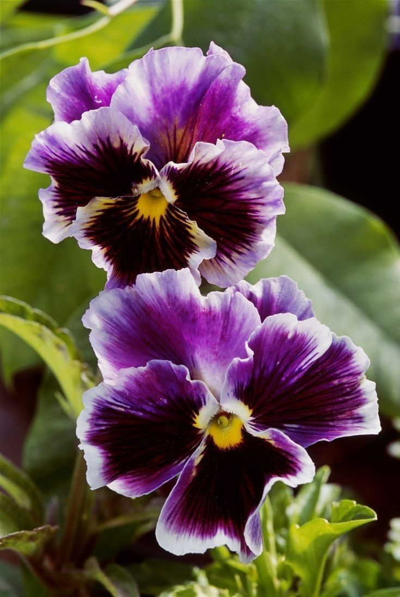

El pensamiento (Viola tricolor) es una de las flores silvestres más hermosas. Pertenece a la familia de las violáceas (violetas) y crece en la mayor parte de Europa, preferiblemente al sol o a la sombra, en prados secos, campos y a lo largo de la carretera. Es una planta relativamente pequeña, con una altura media de 15 a 30 centímetros.
Volver a la Galería